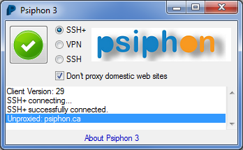

| English | فارسی | Русский | Ўзбекча | O'zbekcha | Türkmençe | 中文 | العربي | ภาษาไทย |
| azərbaycan dili | Uyghurche | қазақ тілі | ||||||
Psiphon 3 VPN, SSH və HTTP Proxy texnologiyasından istifadə edən və ən yaxşı məzmuna baxmaq imkanını verən Psiphon Inc.şirkətinin yeni dolayı alətidir. Senzuranın keçilməsi imkanlarınızı artırmaq üçün Psiphon 3 kliyentiniz yeni giriş nöqtələri haqqında avtomatik öyrənəcək.
Proqramı yükləmək üçün bu yükləmə əlaqəsinə klikləyin.
Hazırda Psiphon 3 üçün Windows XP/Vista/7 tələb olunur. Mac OS X və Android daxil olmaqla mobil platformalar üçün dəstək gələcəkdə gözlənilir!
Psiphon 3 açıq mənbə layihəsidir. Layihənin ev səhifəsində mənbə kodunu və dizayn sənədlərini tapmaq olar
Kliyent proqramını yükləyib açın. Proqramı işlətdiyiniz zaman onun Psiphon Inc. şirkətinin qanuni məhsulu olduğunu göstərən təhlükəsizlik bildirişi göstərilməlidir.

Psiphon 3 işə salınan kimi avtomatik olaraq qoşulmağa başlayır. Qoşulma zamanı fırlanan işarə göstərilir. Aşağıdakı tunnel rejimlərindən birini seçə bilərsiniz: VPN (L2TP over IPSec), SSH və ya SSH+ (SSH + obfuskasiya, protokol fingerprintinqini qarşısını alan SSH üzərində təsadüfi qat).

İşarə yaşıl rəngdə olan zaman İnternet trafiki Psiphon 3 üzərində gedir. VPN rejimində bütün trafik avtomatik olaraq Psiphon 3 tuneli üzərində keçir.
SSH və SSH+ rejimlərində Psiphon 3 Windows sisteminin proksi parametrləri və trafikini Psiphon 3 vasitəsilə tuneldən keçən bu parametrlərə uyğunlaşan proqramlar üçün qurur. Bu parametrlər susmaya görə bütün əsas veb-brauzerləri tərəfindən uyğunlaşdırılır.
Bundan başqa SSH və SSH+ rejimlərində Psiphon 3 bölünmüş tunel seçimini təklif edir: beynəlxalq trafik proksi tunelindən keçirilir, yerlisi isə keçirilmir. Bölünmüş tunelləşdirməni aktivləşdirmək üçün “Don’t proxy...” seçin. Bu seçim aktiv olduğu zaman proksiləşdirilməmiş domenlər bildiriş sahəsində qeyd olunur.

Proqramı bağladığınız zaman Psiphon 3 bağlantını avtomatik kəsir. Bağlantı seçimini dəyişmək üçün işarəyə klikləyə bilərsiniz.